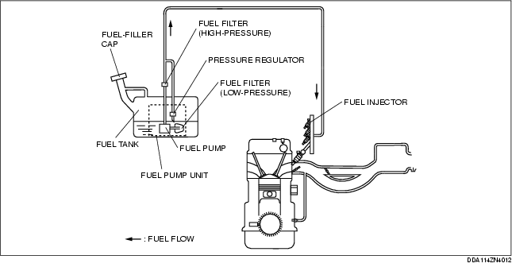

Mazda2
service manual
Search the manual
Home
Technical Guide
Engine
Fuel system
Fuel system flow diagram [ZY]
Fuel system flow diagram [ZY]
Fuel Flow

Previous
Fuel system structural view [ZY]
Next
Returnless fuel system outline [ZY]